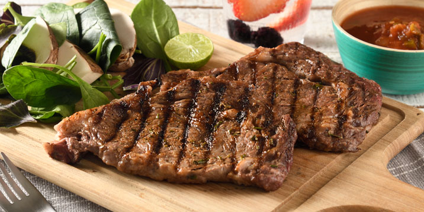

1. Tomando los bistecs de uno en uno, sazona muy bien por ambos lados con sal, pimienta y ajo. Coloca los bistecs en un recipiente de cristal hondo. Vierte cuidadosamente la cerveza hasta que cubras la carne por completo. Tapa y mete al refrigerador por dos horas.
2. Saca la carne del refrigerador y permite que se ponga a temperatura ambiente; mientras tanto prepara el carbón en el asador.
3. Tan pronto como las brasas estén en su punto más caliente, coloca la carne sobre la parrilla y deja cocinar por unos 4-6 minutos por lado, dependiendo del grosor de la carne. Yo generalmente uso cortes delgados ya que la carne estará cocida rápidamente, pero ten mucho cuidado de no recocerla ya que se pondrá dura.
4. Sirve inmediatamente acompañada de cebollitas asadas, guacamole, salsa, arroz y frijoles. ¡Buen provecho!
Carne Asada Norteña

Ingredientes
-1 cucharada de Knorr® Res
-2 cucharadas de romero fresco finamente picado
-1 cucharada de paprika
-1/2 cucharada de pimienta negra en grano
-1 cucharadita de ajo en polvo
-600 gramos de filetes de rib eye de res
2 cucharadas de aceite
Instrucciones
1. Preparar la mezcla para marinar combinando Knorr® Res con romero, paprika, pimienta y ajo.
2. Repartir la mezcla en cada Rib eye y frotar para lograr impregnar los sabores.
3. Cocinar en una parrilla o asador previamente engrasado con aceite hasta lograr el término deseado. Servir.